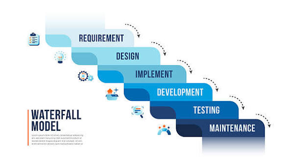
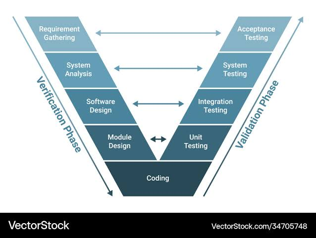
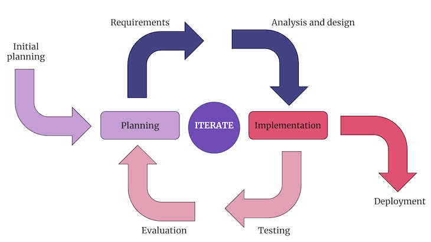

01. Análisis de Requisitos
Relevamiento y documentación formal de requisitos funcionales y no funcionales. Criterios de aceptación iniciales.
El SDLC (Software Development Life Cycle) define la estructura metodológica empleada en la construcción, evaluación y entrega de software de alta calidad dentro de 67 Patrol.
Relevamiento y documentación formal de requisitos funcionales y no funcionales. Criterios de aceptación iniciales.
Modelado de arquitectura del software, esquemas de bases de datos, diagramas UML y maquetación de interfaces.
Escritura del código fuente siguiendo buenas prácticas, control de versiones con Git y revisión de código.
Ejecución intensiva de pruebas funcionales, de regresión e integración para asegurar la calidad antes de liberar.
Liberación controlada en entornos de producción mediante pipelines y monitoreo en tiempo real del rendimiento.
Atención a incidencias de producción, aplicación de parches de seguridad y actualización continua de funcionalidades.
Aprende sobre el modelo en cascada, en V y los modelos iterativos e incrementales a través de esquemas gráficos interactivos y bloques comparativos detallados.
Es el enfoque clásico del ciclo de vida del software. Plantea una ejecución estrictamente lineal y secuencial donde cada fase debe completarse y validarse mediante entregables formales antes de iniciar la siguiente.

Evolución directa del modelo en cascada que enfatiza rigurosamente el control de calidad, asociando cada fase de diseño con su correspondiente etapa de pruebas.

Divide el proyecto en pequeños bloques o incrementos funcionales. En cada ciclo se entrega una versión operativa ampliada del producto.
